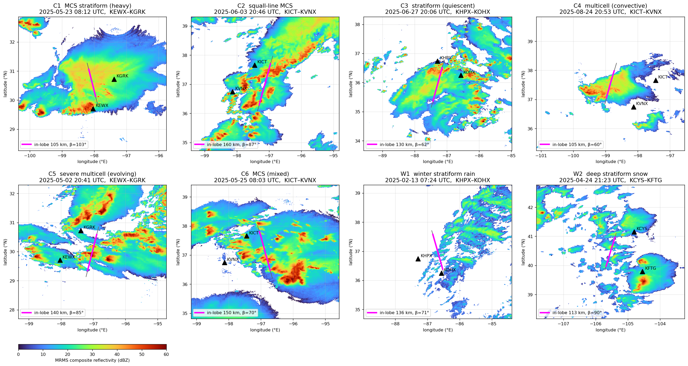
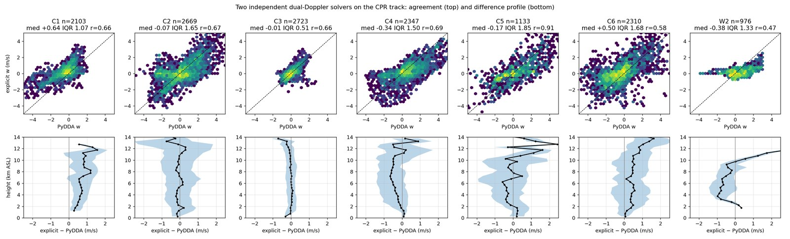
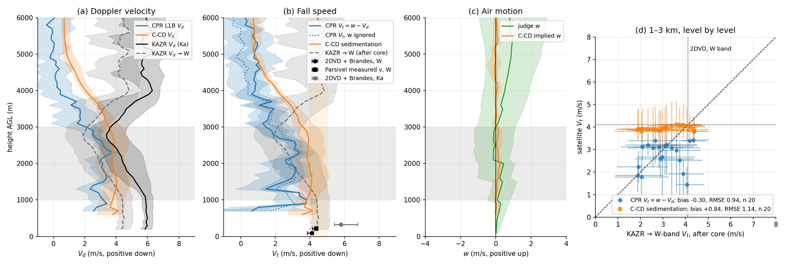

Air motion and fall speed in EarthCARE Doppler observations
A ground-based dual-Doppler reference along the satellite track, used to test three satellite-only decompositions
2025 to present, independent research
Reference NEXRAD dual-Doppler winds along the EarthCARE track VALIDATED ESA C-CD, JAXA CPR_CLP and DPR-based fall speeds
EarthCARE's cloud radar is the first Doppler radar in space. Its nadir beam measures air motion and hydrometeor fall speed together, and cannot separate them, and none of the three published satellite-only fall speed (ESA C-CD, JAXA CPR_CLP, DPR-PSD-assumed decomposition) had been tested against an independent measurement.
I built a ground-based dual-Doppler reference for vertical air motion along eight CPR tracks (PyDDA variational and explicit CEDRIC-type methods) from pairs of NEXRAD radars, cross-checked by two independent solvers: accurate to 0.65 m s⁻¹ in stratiform cloud and 1–2.3 m s⁻¹ in convection. And used it to evaluate the ESA C-CD, JAXA CPR_CLP and DPR-PSD-based fall-speed decompositions.
The ESA C-CD sedimentation velocity agrees with the reference-corrected fall speed to 0.45 m s⁻¹ where |w| < 0.5 m s⁻¹ and retains the air motion up to |w| ≈ 1.5 m s⁻¹. The JAXA CPR_CLP product assigns cloud-particle fall speeds 3 m s⁻¹ too small in rain and 0.5 m s⁻¹ in ice, so its air velocity is 1.1 m s⁻¹ too high and uncorrelated with the reference. The PSD-assumed decomposition is unbiased inside its stated snow range but biased by +0.7 to +2 m s⁻¹ above it and, on weaker evidence, by +3 to +4 m s⁻¹ in light rain at the DPR sensitivity floor. A disdrometer-derived W-band fall speed at the ARM Southern Great Plains site agrees with the C-CD sedimentation velocity to 0.3 m s⁻¹.
Li, H., 2026: Ground-based dual-Doppler validation of vertical air motion and hydrometeor fall speed in EarthCARE CPR Doppler observations. in preparation for Atmospheric Measurement Techniques.



